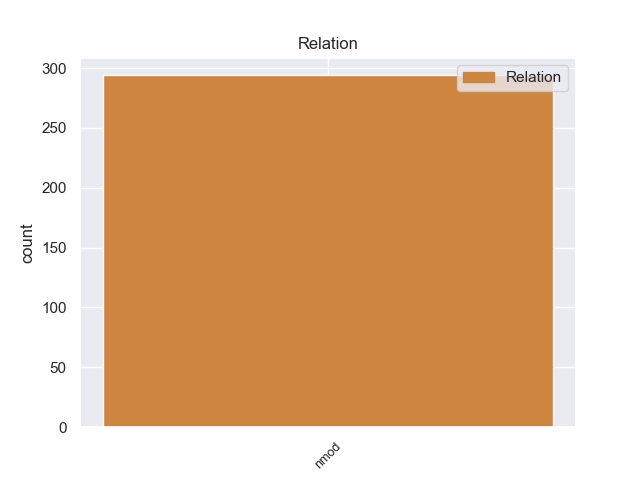
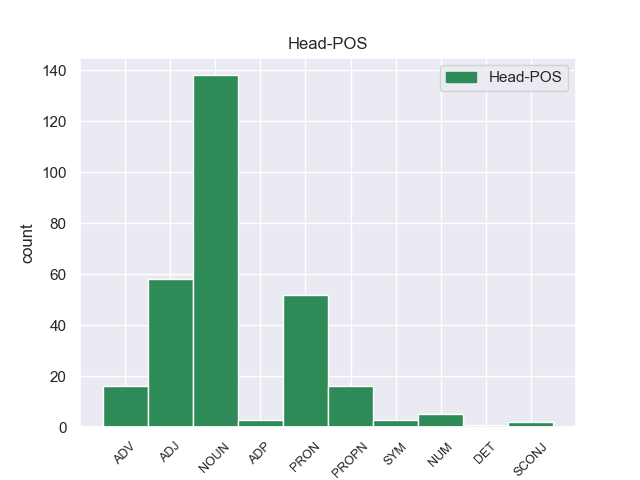
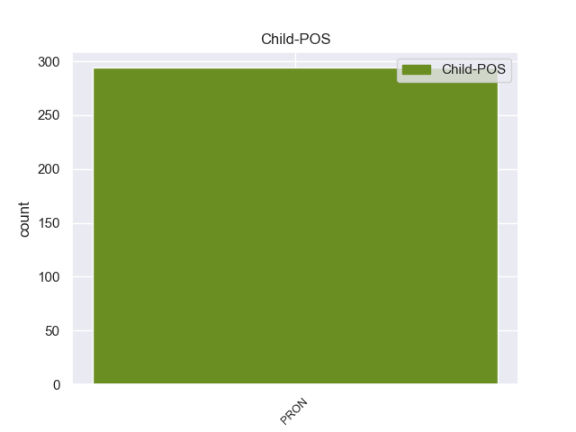

Distribution of features within this leaf



Morphosyntax Rules sorted by frequency.
- When the dependent token is the nominal modifier(nmod) of the head token, the Case needs to be Acc.
1 A _ _ _ _ 0 _ _ _
2 continuación _ _ _ _ 0 _ _ _
3 , _ _ _ _ 0 _ _ _
4 sonarán _ _ _ _ 0 _ _ _
5 los _ _ _ _ 0 _ _ _
6 ritmos _ _ _ _ 0 _ _ _
7 más _ _ _ _ 0 _ _ _
8 intensos _ _ _ _ 0 _ _ _
9 de _ _ _ _ 0 _ _ _
10 los _ _ _ _ 0 _ _ _
11 llanos _ _ _ _ 0 _ _ _
12 interpretados _ _ _ _ 0 _ _ _
13 por _ _ _ _ 0 _ _ _
14 una _ _ _ _ 0 _ _ _
15 agrupación _ _ _ _ 0 _ _ _
16 que _ _ _ _ 0 _ _ _
17 romperá _ _ _ _ 0 _ _ _
18 esquemas _ _ _ _ 0 _ _ _
19 : _ _ _ _ 0 _ _ _
20 el _ _ _ _ 0 _ _ _
21 Ensamble _ _ _ _ 0 _ _ _
22 de _ _ _ _ 0 _ _ _
23 Arpas _ _ _ _ 0 _ _ _
24 de _ _ _ _ 0 _ _ _
25 la _ _ _ _ 0 _ _ _
26 Orquesta _ _ _ _ 0 _ _ _
27 de _ _ _ _ 0 _ _ _
28 Música _ _ _ _ 0 _ _ _
29 Popular _ _ _ _ 0 _ _ _
30 de _ _ _ _ 0 _ _ _
31 el _ _ _ _ 0 _ _ _
32 Estado _ _ _ _ 0 _ _ _
33 Guárico _ _ _ _ 0 _ _ _
34 , _ _ _ _ 0 _ _ _
35 integrado _ _ _ _ 0 _ _ _
36 por _ _ _ _ 0 _ _ _
37 14 _ _ _ _ 0 _ _ _
38 ejecutantes _ _ _ _ 0 _ _ _
39 , _ _ _ _ 0 _ _ _
40 todos _ _ _ _ 0 _ _ _
41 formados _ _ _ _ 0 _ _ _
42 por _ _ _ _ 0 _ _ _
43 El _ _ _ _ 0 _ _ _
44 Sistema _ _ _ _ 0 _ _ _
45 , _ _ _ _ 0 _ _ _
46 siendo _ _ _ _ 0 _ _ _
47 algunos alguno PRON _ Gender=Masc|Number=Plur|PronType=Ind 0 _ _ _
48 de _ _ _ _ 0 _ _ _
49 ellos él PRON _ Case=Acc,Nom|Gender=Masc|Number=Plur|Person=3|PronType=Prs 47 nmod _ _
50 ganadores _ _ _ _ 0 _ _ _
51 de _ _ _ _ 0 _ _ _
52 el _ _ _ _ 0 _ _ _
53 reconocido _ _ _ _ 0 _ _ _
54 Festival _ _ _ _ 0 _ _ _
55 Internacional _ _ _ _ 0 _ _ _
56 de _ _ _ _ 0 _ _ _
57 Arpas _ _ _ _ 0 _ _ _
58 Infantil _ _ _ _ 0 _ _ _
59 y _ _ _ _ 0 _ _ _
60 Adultos _ _ _ _ 0 _ _ _
61 de _ _ _ _ 0 _ _ _
62 Villavicencio _ _ _ _ 0 _ _ _
63 , _ _ _ _ 0 _ _ _
64 Colombia _ _ _ _ 0 _ _ _
65 . _ _ _ _ 0 _ _ _
non-conforming Examples:
1 Los _ _ _ _ 0 _ _ _
2 estados estado NOUN _ Gender=Masc|Number=Plur 0 _ _ _
3 superados _ _ _ _ 0 _ _ _
4 de _ _ _ _ 0 _ _ _
5 el _ _ _ _ 0 _ _ _
6 yo yo PRON _ Case=Nom|Number=Sing|Person=1|PronType=Prs 2 nmod _ _
7 se _ _ _ _ 0 _ _ _
8 reprimen _ _ _ _ 0 _ _ _
9 , _ _ _ _ 0 _ _ _
10 pero _ _ _ _ 0 _ _ _
11 pueden _ _ _ _ 0 _ _ _
12 volver _ _ _ _ 0 _ _ _
13 a _ _ _ _ 0 _ _ _
14 actualizar _ _ _ _ 0 _ _ _
15 se _ _ _ _ 0 _ _ _
16 . _ _ _ _ 0 _ _ _
1 Surtainville _ _ _ _ 0 _ _ _
2 es _ _ _ _ 0 _ _ _
3 una _ _ _ _ 0 _ _ _
4 población _ _ _ _ 0 _ _ _
5 y _ _ _ _ 0 _ _ _
6 comuna _ _ _ _ 0 _ _ _
7 francesa _ _ _ _ 0 _ _ _
8 , _ _ _ _ 0 _ _ _
9 situada _ _ _ _ 0 _ _ _
10 en _ _ _ _ 0 _ _ _
11 la _ _ _ _ 0 _ _ _
12 región _ _ _ _ 0 _ _ _
13 de _ _ _ _ 0 _ _ _
14 Baja _ _ _ _ 0 _ _ _
15 Normandía _ _ _ _ 0 _ _ _
16 , _ _ _ _ 0 _ _ _
17 departamento _ _ _ _ 0 _ _ _
18 de _ _ _ _ 0 _ _ _
19 Mancha _ _ _ _ 0 _ _ _
20 , _ _ _ _ 0 _ _ _
21 en _ _ _ _ 0 _ _ _
22 el _ _ _ _ 0 _ _ _
23 distrito _ _ _ _ 0 _ _ _
24 de _ _ _ _ 0 _ _ _
25 Cherbourg _ _ _ _ 0 _ _ _
26 - _ _ _ _ 0 _ _ _
27 Octeville _ _ _ _ 0 _ _ _
28 y _ _ _ _ 0 _ _ _
29 cantón cantón NOUN _ Gender=Masc|Number=Sing 0 _ _ _
30 de _ _ _ _ 0 _ _ _
31 Les él PRON _ Case=Dat|Number=Plur|Person=3|PronType=Prs 29 nmod _ _
32 Pieux _ _ _ _ 0 _ _ _
33 . _ _ _ _ 0 _ _ _
1 Ya _ _ _ _ 0 _ _ _
2 desde _ _ _ _ 0 _ _ _
3 la _ _ _ _ 0 _ _ _
4 década _ _ _ _ 0 _ _ _
5 de _ _ _ _ 0 _ _ _
6 1860 _ _ _ _ 0 _ _ _
7 y _ _ _ _ 0 _ _ _
8 1870 _ _ _ _ 0 _ _ _
9 , _ _ _ _ 0 _ _ _
10 grupos _ _ _ _ 0 _ _ _
11 de _ _ _ _ 0 _ _ _
12 inmigrantes inmigrante NOUN _ Number=Plur 0 _ _ _
13 franceses _ _ _ _ 0 _ _ _
14 como _ _ _ _ 0 _ _ _
15 Les él PRON _ Case=Dat|Number=Plur|Person=3|PronType=Prs 12 nmod _ _
16 Egaux _ _ _ _ 0 _ _ _
17 y _ _ _ _ 0 _ _ _
18 alemanes _ _ _ _ 0 _ _ _
19 como _ _ _ _ 0 _ _ _
20 Vorwarts _ _ _ _ 0 _ _ _
21 , _ _ _ _ 0 _ _ _
22 habían _ _ _ _ 0 _ _ _
23 comenzado _ _ _ _ 0 _ _ _
24 a _ _ _ _ 0 _ _ _
25 organizar _ _ _ _ 0 _ _ _
26 el _ _ _ _ 0 _ _ _
27 movimiento _ _ _ _ 0 _ _ _
28 obrero _ _ _ _ 0 _ _ _
29 argentino _ _ _ _ 0 _ _ _
30 . _ _ _ _ 0 _ _ _
1 Según _ _ _ _ 0 _ _ _
2 Hartmann _ _ _ _ 0 _ _ _
3 , _ _ _ _ 0 _ _ _
4 el _ _ _ _ 0 _ _ _
5 tratamiento _ _ _ _ 0 _ _ _
6 psicoanalítico _ _ _ _ 0 _ _ _
7 apunta _ _ _ _ 0 _ _ _
8 a _ _ _ _ 0 _ _ _
9 ampliar _ _ _ _ 0 _ _ _
10 la _ _ _ _ 0 _ _ _
11 esfera _ _ _ _ 0 _ _ _
12 sin _ _ _ _ 0 _ _ _
13 conflicto _ _ _ _ 0 _ _ _
14 de _ _ _ _ 0 _ _ _
15 el _ _ _ _ 0 _ _ _
16 funcionamiento funcionamiento NOUN _ Gender=Masc|Number=Sing 0 _ _ _
17 de _ _ _ _ 0 _ _ _
18 el _ _ _ _ 0 _ _ _
19 Yo yo PRON _ Case=Nom|Number=Sing|Person=1|PronType=Prs 16 nmod _ SpaceAfter=No
20 . _ _ _ _ 0 _ _ _
1 Ahora _ _ _ _ 0 _ _ _
2 todos _ _ _ _ 0 _ _ _
3 tenemos _ _ _ _ 0 _ _ _
4 más _ _ _ _ 0 _ _ _
5 cultura _ _ _ _ 0 _ _ _
6 musical _ _ _ _ 0 _ _ _
7 , _ _ _ _ 0 _ _ _
8 y _ _ _ _ 0 _ _ _
9 gente _ _ _ _ 0 _ _ _
10 más más ADV _ Degree=Cmp 0 _ _ _
11 joven _ _ _ _ 0 _ _ _
12 que _ _ _ _ 0 _ _ _
13 yo yo PRON _ Case=Nom|Number=Sing|Person=1|PronType=Prs 10 nmod _ _
14 que _ _ _ _ 0 _ _ _
15 ahora _ _ _ _ 0 _ _ _
16 hace _ _ _ _ 0 _ _ _
17 música _ _ _ _ 0 _ _ _
18 ha _ _ _ _ 0 _ _ _
19 tenido _ _ _ _ 0 _ _ _
20 la _ _ _ _ 0 _ _ _
21 suerte _ _ _ _ 0 _ _ _
22 de _ _ _ _ 0 _ _ _
23 tener _ _ _ _ 0 _ _ _
24 mucho _ _ _ _ 0 _ _ _
25 más _ _ _ _ 0 _ _ _
26 acceso _ _ _ _ 0 _ _ _
27 a _ _ _ _ 0 _ _ _
28 otros _ _ _ _ 0 _ _ _
29 lenguajes _ _ _ _ 0 _ _ _
30 musicales _ _ _ _ 0 _ _ _
31 . _ _ _ _ 0 _ _ _